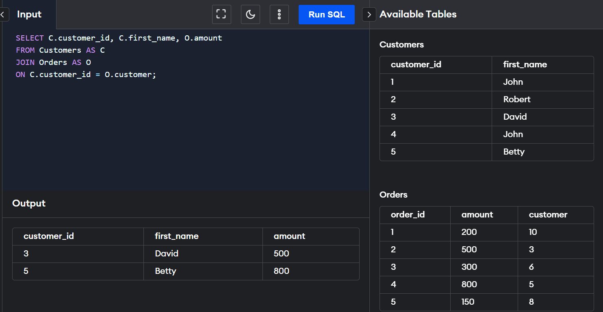

Join Clause
The join clause allows us to retrieve data from two or more related tables into a meaningful
result set. We can join the table using a SELECT statement and a join condition. It indicates how
SQL Server can use data from one table to select rows from another table. In general, tables are
related to each other using foreign key constraints.
In a JOIN query, a condition indicates how two tables are related:
Choose columns from each table that should be used in the join.
A join condition indicates a foreign key
from one table and its corresponding key in the other table.
Specify the logical operator to compare values from the columns like =, <, or >.
Types of JOINS in SQL Server
SQL Server mainly supports four types of JOINS, and each join type defines how two tables are related in a
query. The following are types of join supports in SQL Server:
INNER JOIN
This JOIN returns all records from multiple tables that satisfy the specified join condition. It is the simple
and most popular form of join and assumes as a default join. If we omit the INNER keyword with the JOIN query,
we will get the same output.
INNER JOIN Syntax
SELECT columns
FROM table1
INNER JOIN table2 ON condition1
INNER JOIN table3 ON condition2
SELF JOIN
A table is joined to itself using the SELF JOIN. It means that each table row is combined with
itself and with every other table row. The SELF JOIN can be thought of as a JOIN of two copies of the same
tables. We can do this with the help of table name aliases to assign a specific name to each table's instance.
The table aliases enable us to use the table's temporary name that we are going to use in the query. It's a useful
way to extract hierarchical data and comparing rows inside a single table.
SELF JOIN Syntax
SELECT T1.col_name, T2.col_name...
FROM table1 T1, table1 T2
WHERE join_condition;
CROSS JOIN
CROSS JOIN in SQL Server combines all of the possibilities of two or more tables and returns a result that includes
every row from all contributing tables. It's also known as CARTESIAN JOIN because it produces the Cartesian
product of all linked tables. The Cartesian product represents all rows present in the first table multiplied
by all rows present in the second table.
CROSS JOIN Syntax
SELECT column_lists
FROM table1
CROSS JOIN table2;
OUTER JOIN
OUTER JOIN in SQL Server returns all records from both tables that satisfy the join condition. In other words,
this join will not return only the matching record but also return all unmatched rows from one or both tables.
LEFT OUTER JOIN Syntax
SELECT column_lists
FROM table1
LEFT [OUTER] JOIN table2
ON table1.column = table2.column;
RIGHT OUTER JOIN Syntax
SELECT column_lists
FROM table1
RIGHT [OUTER] JOIN table2
ON table1.column = table2.column;
FULL OUTER JOIN Syntax
SELECT column_lists
FROM table1
FULL [OUTER] JOIN table2
ON table1.column = table2.column;
